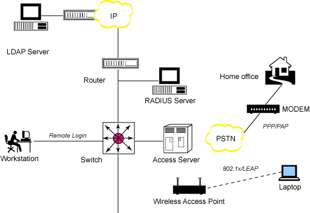

<!DOCTYPE HTML>
<html lang="" >
    <head>
        <meta charset="UTF-8">
        <meta content="text/html; charset=utf-8" http-equiv="Content-Type">
        <title>Radius · GitBook</title>
        <meta http-equiv="X-UA-Compatible" content="IE=edge" />
        <meta name="description" content="">
        <meta name="generator" content="GitBook 3.2.3">
        
        
        
    
    <link rel="stylesheet" href="../../gitbook/style.css">

    
            
                
                <link rel="stylesheet" href="../../gitbook/gitbook-plugin-anchors/plugin.css">
                
            
                
                <link rel="stylesheet" href="../../gitbook/gitbook-plugin-highlight/website.css">
                
            
                
                <link rel="stylesheet" href="../../gitbook/gitbook-plugin-search/search.css">
                
            
                
                <link rel="stylesheet" href="../../gitbook/gitbook-plugin-fontsettings/website.css">
                
            
        

    

    
        
    
        
    
        
    
        
    
        
    
        
    

        
    
    
    
    <meta name="HandheldFriendly" content="true"/>
    <meta name="viewport" content="width=device-width, initial-scale=1, user-scalable=no">
    <meta name="apple-mobile-web-app-capable" content="yes">
    <meta name="apple-mobile-web-app-status-bar-style" content="black">
    <link rel="apple-touch-icon-precomposed" sizes="152x152" href="../../gitbook/images/apple-touch-icon-precomposed-152.png">
    <link rel="shortcut icon" href="../../gitbook/images/favicon.ico" type="image/x-icon">

    
    <link rel="next" href="../dataplane.html" />
    
    
    <link rel="prev" href="README.md" />
    

    <style>
    @media only screen and (max-width: 640px) {
        .book-header .hidden-mobile {
            display: none;
        }
    }
    </style>
    <script>
        window["gitbook-plugin-github-buttons"] = {"buttons":[{"user":"tonydeng","repo":"sdn-handbook","type":"star","size":"small","count":true},{"user":"tonydeng","type":"follow","size":"small","width":"170","count":true},{"user":"tonydeng","repo":"sdn-handbook","type":"watch","size":"small","count":true}]};
    </script>

    </head>
    <body>
        
<div class="book">
    <div class="book-summary">
        
            
<div id="book-search-input" role="search">
    <input type="text" placeholder="Type to search" />
</div>

            
                <nav role="navigation">
                


<ul class="summary">
    
    

    

    
        
        
    
        <li class="chapter " data-level="1.1" data-path="../../">
            
                <a href="../../">
            
                    
                    1. 前言
            
                </a>
            

            
        </li>
    

    
        
        <li class="header">网络基础</li>
        
        
    
        <li class="chapter " data-level="2.1" data-path="../../basic/">
            
                <a href="../../basic/">
            
                    
                    2. 网络基础理论
            
                </a>
            

            
            <ul class="articles">
                
    
        <li class="chapter " data-level="2.1.1" data-path="../../basic/tcpip.html">
            
                <a href="../../basic/tcpip.html">
            
                    
                    TCP/IP网络模型
            
                </a>
            

            
        </li>
    
        <li class="chapter " data-level="2.1.2" data-path="../../basic/arp.html">
            
                <a href="../../basic/arp.html">
            
                    
                    ARP
            
                </a>
            

            
        </li>
    
        <li class="chapter " data-level="2.1.3" data-path="../../basic/icmp.html">
            
                <a href="../../basic/icmp.html">
            
                    
                    ICMP
            
                </a>
            

            
        </li>
    
        <li class="chapter " data-level="2.1.4" data-path="../../basic/route.html">
            
                <a href="../../basic/route.html">
            
                    
                    路由
            
                </a>
            

            
        </li>
    
        <li class="chapter " data-level="2.1.5" data-path="../../basic/switch.html">
            
                <a href="../../basic/switch.html">
            
                    
                    交换机
            
                </a>
            

            
        </li>
    
        <li class="chapter " data-level="2.1.6" data-path="../../basic/udp.html">
            
                <a href="../../basic/udp.html">
            
                    
                    UDP
            
                </a>
            

            
        </li>
    
        <li class="chapter " data-level="2.1.7" data-path="../../basic/dhcp.html">
            
                <a href="../../basic/dhcp.html">
            
                    
                    DHCP/DNS
            
                </a>
            

            
        </li>
    
        <li class="chapter " data-level="2.1.8" data-path="../../basic/tcp.html">
            
                <a href="../../basic/tcp.html">
            
                    
                    TCP
            
                </a>
            

            
        </li>
    
        <li class="chapter " data-level="2.1.9" data-path="../../basic/vlan.html">
            
                <a href="../../basic/vlan.html">
            
                    
                    VLAN
            
                </a>
            

            
        </li>
    
        <li class="chapter " data-level="2.1.10" data-path="../../basic/overlay.html">
            
                <a href="../../basic/overlay.html">
            
                    
                    Overlay
            
                </a>
            

            
        </li>
    
        <li class="chapter " data-level="2.1.11" data-path="../../basic/snmp.html">
            
                <a href="../../basic/snmp.html">
            
                    
                    SNMP
            
                </a>
            

            
        </li>
    
        <li class="chapter " data-level="2.1.12" data-path="../../basic/lldp.html">
            
                <a href="../../basic/lldp.html">
            
                    
                    LLDP
            
                </a>
            

            
        </li>
    

            </ul>
            
        </li>
    
        <li class="chapter " data-level="2.2" data-path="../../linux/">
            
                <a href="../../linux/">
            
                    
                    3. Linux网络
            
                </a>
            

            
            <ul class="articles">
                
    
        <li class="chapter " data-level="2.2.1" data-path="../../linux/config.html">
            
                <a href="../../linux/config.html">
            
                    
                    Linux网络配置
            
                </a>
            

            
            <ul class="articles">
                
    
        <li class="chapter " data-level="2.2.1.1" data-path="../../linux/virtual-device.html">
            
                <a href="../../linux/virtual-device.html">
            
                    
                    虚拟网络设备
            
                </a>
            

            
        </li>
    

            </ul>
            
        </li>
    
        <li class="chapter " data-level="2.2.2" data-path="../../linux/iptables.html">
            
                <a href="../../linux/iptables.html">
            
                    
                    iptables/netfilter
            
                </a>
            

            
        </li>
    
        <li class="chapter " data-level="2.2.3" data-path="../../linux/loadbalance.html">
            
                <a href="../../linux/loadbalance.html">
            
                    
                    负载均衡
            
                </a>
            

            
        </li>
    
        <li class="chapter " data-level="2.2.4" data-path="../../linux/tc.html">
            
                <a href="../../linux/tc.html">
            
                    
                    流量控制
            
                </a>
            

            
        </li>
    
        <li class="chapter " data-level="2.2.5" data-path="../../linux/sr-iov.html">
            
                <a href="../../linux/sr-iov.html">
            
                    
                    SR-IOV
            
                </a>
            

            
        </li>
    
        <li class="chapter " data-level="2.2.6" data-path="../../linux/vrf.html">
            
                <a href="../../linux/vrf.html">
            
                    
                    内核VRF
            
                </a>
            

            
        </li>
    
        <li class="chapter " data-level="2.2.7" data-path="../../linux/bpf/">
            
                <a href="../../linux/bpf/">
            
                    
                    eBPF
            
                </a>
            

            
            <ul class="articles">
                
    
        <li class="chapter " data-level="2.2.7.1" data-path="../../linux/bpf/bcc.html">
            
                <a href="../../linux/bpf/bcc.html">
            
                    
                    bcc
            
                </a>
            

            
        </li>
    
        <li class="chapter " data-level="2.2.7.2" data-path="../../linux/bpf/troubleshooting.html">
            
                <a href="../../linux/bpf/troubleshooting.html">
            
                    
                    故障排查
            
                </a>
            

            
        </li>
    

            </ul>
            
        </li>
    
        <li class="chapter " data-level="2.2.8" data-path="../../linux/XDP/">
            
                <a href="../../linux/XDP/">
            
                    
                    XDP
            
                </a>
            

            
            <ul class="articles">
                
    
        <li class="chapter " data-level="2.2.8.1" data-path="../../linux/XDP/design.html">
            
                <a href="../../linux/XDP/design.html">
            
                    
                    XDP架构
            
                </a>
            

            
        </li>
    
        <li class="chapter " data-level="2.2.8.2" data-path="../../linux/XDP/use-cases.html">
            
                <a href="../../linux/XDP/use-cases.html">
            
                    
                    使用场景
            
                </a>
            

            
        </li>
    

            </ul>
            
        </li>
    
        <li class="chapter " data-level="2.2.9" data-path="../../linux/tools.html">
            
                <a href="../../linux/tools.html">
            
                    
                    常用工具
            
                </a>
            

            
            <ul class="articles">
                
    
        <li class="chapter " data-level="2.2.9.1" data-path="../../linux/tcpdump.html">
            
                <a href="../../linux/tcpdump.html">
            
                    
                    网络抓包tcpdump
            
                </a>
            

            
        </li>
    
        <li class="chapter " data-level="2.2.9.2" data-path="../../linux/scapy.html">
            
                <a href="../../linux/scapy.html">
            
                    
                    scapy
            
                </a>
            

            
        </li>
    

            </ul>
            
        </li>
    
        <li class="chapter " data-level="2.2.10" data-path="../../linux/kernel-network-params.html">
            
                <a href="../../linux/kernel-network-params.html">
            
                    
                    内核网络参数
            
                </a>
            

            
        </li>
    

            </ul>
            
        </li>
    
        <li class="chapter " data-level="2.3" data-path="../../ovs/">
            
                <a href="../../ovs/">
            
                    
                    4. Open vSwitch
            
                </a>
            

            
            <ul class="articles">
                
    
        <li class="chapter " data-level="2.3.1" data-path="../../ovs/">
            
                <a href="../../ovs/">
            
                    
                    OVS介绍
            
                </a>
            

            
        </li>
    
        <li class="chapter " data-level="2.3.2" data-path="../../ovs/build.html">
            
                <a href="../../ovs/build.html">
            
                    
                    OVS编译
            
                </a>
            

            
        </li>
    
        <li class="chapter " data-level="2.3.3" data-path="../../ovs/internal.html">
            
                <a href="../../ovs/internal.html">
            
                    
                    OVS原理
            
                </a>
            

            
        </li>
    
        <li class="chapter " data-level="2.3.4" data-path="../../ovs/ovn.html">
            
                <a href="../../ovs/ovn.html">
            
                    
                    Open Virtual Network
            
                </a>
            

            
            <ul class="articles">
                
    
        <li class="chapter " data-level="2.3.4.1" data-path="../../ovs/ovn-ubuntu.html">
            
                <a href="../../ovs/ovn-ubuntu.html">
            
                    
                    OVN在Ubuntu编译
            
                </a>
            

            
        </li>
    
        <li class="chapter " data-level="2.3.4.2" data-path="../../ovs/ovn-internal.html">
            
                <a href="../../ovs/ovn-internal.html">
            
                    
                    OVN实践
            
                </a>
            

            
        </li>
    
        <li class="chapter " data-level="2.3.4.3" data-path="../../ovs/ovn-ha.html">
            
                <a href="../../ovs/ovn-ha.html">
            
                    
                    OVN高可用
            
                </a>
            

            
        </li>
    
        <li class="chapter " data-level="2.3.4.4" data-path="../../ovs/ovn-kubernetes.html">
            
                <a href="../../ovs/ovn-kubernetes.html">
            
                    
                    OVN Kubernetes插件
            
                </a>
            

            
        </li>
    
        <li class="chapter " data-level="2.3.4.5" data-path="../../ovs/ovn-docker.html">
            
                <a href="../../ovs/ovn-docker.html">
            
                    
                    OVN Docker插件
            
                </a>
            

            
        </li>
    
        <li class="chapter " data-level="2.3.4.6" data-path="../../ovs/ovn-openstack.html">
            
                <a href="../../ovs/ovn-openstack.html">
            
                    
                    OVN OpenStack
            
                </a>
            

            
        </li>
    

            </ul>
            
        </li>
    

            </ul>
            
        </li>
    
        <li class="chapter " data-level="2.4" data-path="../../dpdk/">
            
                <a href="../../dpdk/">
            
                    
                    5. DPDK
            
                </a>
            

            
            <ul class="articles">
                
    
        <li class="chapter " data-level="2.4.1" data-path="../../dpdk/introduction.html">
            
                <a href="../../dpdk/introduction.html">
            
                    
                    DPDK简介
            
                </a>
            

            
        </li>
    
        <li class="chapter " data-level="2.4.2" data-path="../../dpdk/install.html">
            
                <a href="../../dpdk/install.html">
            
                    
                    DPDK安装
            
                </a>
            

            
        </li>
    
        <li class="chapter " data-level="2.4.3" data-path="../../dpdk/forwarding.html">
            
                <a href="../../dpdk/forwarding.html">
            
                    
                    报文转发模型
            
                </a>
            

            
        </li>
    
        <li class="chapter " data-level="2.4.4" data-path="../../dpdk/numa.html">
            
                <a href="../../dpdk/numa.html">
            
                    
                    NUMA
            
                </a>
            

            
        </li>
    
        <li class="chapter " data-level="2.4.5" data-path="../../dpdk/ivshmem.html">
            
                <a href="../../dpdk/ivshmem.html">
            
                    
                    Ring和共享内存
            
                </a>
            

            
        </li>
    
        <li class="chapter " data-level="2.4.6" data-path="../../dpdk/PCIe.html">
            
                <a href="../../dpdk/PCIe.html">
            
                    
                    PCIe
            
                </a>
            

            
        </li>
    
        <li class="chapter " data-level="2.4.7" data-path="../../dpdk/hardware.html">
            
                <a href="../../dpdk/hardware.html">
            
                    
                    网卡性能优化
            
                </a>
            

            
        </li>
    
        <li class="chapter " data-level="2.4.8" data-path="../../dpdk/queue.html">
            
                <a href="../../dpdk/queue.html">
            
                    
                    多队列
            
                </a>
            

            
        </li>
    
        <li class="chapter " data-level="2.4.9" data-path="../../dpdk/offload.html">
            
                <a href="../../dpdk/offload.html">
            
                    
                    硬件offload
            
                </a>
            

            
        </li>
    
        <li class="chapter " data-level="2.4.10" data-path="../../dpdk/io-virtualization.html">
            
                <a href="../../dpdk/io-virtualization.html">
            
                    
                    虚拟化
            
                </a>
            

            
        </li>
    
        <li class="chapter " data-level="2.4.11" data-path="../../dpdk/ovs-dpdk.html">
            
                <a href="../../dpdk/ovs-dpdk.html">
            
                    
                    OVS DPDK
            
                </a>
            

            
        </li>
    
        <li class="chapter " data-level="2.4.12" data-path="../../dpdk/spdk.html">
            
                <a href="../../dpdk/spdk.html">
            
                    
                    SPDK
            
                </a>
            

            
        </li>
    
        <li class="chapter " data-level="2.4.13" data-path="../../dpdk/OpenFastPath.md">
            
                <span>
            
                    
                    OpenFastPath
            
                </a>
            

            
        </li>
    

            </ul>
            
        </li>
    
        <li class="chapter " data-level="2.5" data-path="../../secure/">
            
                <a href="../../secure/">
            
                    
                    6. 安全设备
            
                </a>
            

            
            <ul class="articles">
                
    
        <li class="chapter " data-level="2.5.1" data-path="../../secure/vpn/">
            
                <a href="../../secure/vpn/">
            
                    
                    VPN
            
                </a>
            

            
            <ul class="articles">
                
    
        <li class="chapter " data-level="2.5.1.1" data-path="../../secure/vpn/ipsecvpn.html">
            
                <a href="../../secure/vpn/ipsecvpn.html">
            
                    
                    IPSec VPN
            
                </a>
            

            
        </li>
    
        <li class="chapter " data-level="2.5.1.2" data-path="../../secure/vpn/sslvpn.html">
            
                <a href="../../secure/vpn/sslvpn.html">
            
                    
                    SSL VPN
            
                </a>
            

            
        </li>
    

            </ul>
            
        </li>
    
        <li class="chapter " data-level="2.5.2" data-path="../../secure/icg/">
            
                <a href="../../secure/icg/">
            
                    
                    ICG
            
                </a>
            

            
        </li>
    
        <li class="chapter " data-level="2.5.3" data-path="../../secure/fw/">
            
                <a href="../../secure/fw/">
            
                    
                    Firewall
            
                </a>
            

            
            <ul class="articles">
                
    
        <li class="chapter " data-level="2.5.3.1" data-path="../../secure/fw/principle.html">
            
                <a href="../../secure/fw/principle.html">
            
                    
                    工作原理
            
                </a>
            

            
        </li>
    
        <li class="chapter " data-level="2.5.3.2" data-path="../../secure/fw/classify.html">
            
                <a href="../../secure/fw/classify.html">
            
                    
                    常见分类
            
                </a>
            

            
        </li>
    
        <li class="chapter " data-level="2.5.3.3" data-path="../../secure/fw/evolution.html">
            
                <a href="../../secure/fw/evolution.html">
            
                    
                    演进过程
            
                </a>
            

            
        </li>
    

            </ul>
            
        </li>
    

            </ul>
            
        </li>
    

    
        
        <li class="header">SDN&NFV</li>
        
        
    
        <li class="chapter " data-level="3.1" data-path="../">
            
                <a href="../">
            
                    
                    7. SDN
            
                </a>
            

            
            <ul class="articles">
                
    
        <li class="chapter " data-level="3.1.1" data-path="../yang-language.html">
            
                <a href="../yang-language.html">
            
                    
                    YANG Language
            
                </a>
            

            
        </li>
    
        <li class="chapter " data-level="3.1.2" data-path="../controller/">
            
                <a href="../controller/">
            
                    
                    SDN控制器
            
                </a>
            

            
            <ul class="articles">
                
    
        <li class="chapter " data-level="3.1.2.1" data-path="../controller/odl/">
            
                <a href="../controller/odl/">
            
                    
                    OpenDaylight
            
                </a>
            

            
            <ul class="articles">
                
    
        <li class="chapter " data-level="3.1.2.1.1" data-path="../controller/odl/projects.html">
            
                <a href="../controller/odl/projects.html">
            
                    
                    OpenDaylight Projects
            
                </a>
            

            
        </li>
    
        <li class="chapter " data-level="3.1.2.1.2" data-path="../controller/odl/datastore.html">
            
                <a href="../controller/odl/datastore.html">
            
                    
                    DataStore
            
                </a>
            

            
        </li>
    

            </ul>
            
        </li>
    
        <li class="chapter " data-level="3.1.2.2" data-path="../controller/onos.html">
            
                <a href="../controller/onos.html">
            
                    
                    ONOS
            
                </a>
            

            
        </li>
    
        <li class="chapter " data-level="3.1.2.3" data-path="../controller/floodlight.html">
            
                <a href="../controller/floodlight.html">
            
                    
                    Floodlight
            
                </a>
            

            
        </li>
    
        <li class="chapter " data-level="3.1.2.4" data-path="../controller/ryu.html">
            
                <a href="../controller/ryu.html">
            
                    
                    Ryu
            
                </a>
            

            
        </li>
    
        <li class="chapter " data-level="3.1.2.5" data-path="../controller/pox.html">
            
                <a href="../controller/pox.html">
            
                    
                    NOX/POX
            
                </a>
            

            
        </li>
    

            </ul>
            
        </li>
    
        <li class="chapter " data-level="3.1.3" data-path="../sbi/README.md">
            
                <span>
            
                    
                    南向接口
            
                </a>
            

            
            <ul class="articles">
                
    
        <li class="chapter " data-level="3.1.3.1" data-path="../sbi/openflow.html">
            
                <a href="../sbi/openflow.html">
            
                    
                    OpenFlow
            
                </a>
            

            
        </li>
    
        <li class="chapter " data-level="3.1.3.2" data-path="../sbi/of-config.html">
            
                <a href="../sbi/of-config.html">
            
                    
                    OF-Config
            
                </a>
            

            
        </li>
    
        <li class="chapter " data-level="3.1.3.3" data-path="../sbi/netconf.html">
            
                <a href="../sbi/netconf.html">
            
                    
                    NETCONF
            
                </a>
            

            
            <ul class="articles">
                
    
        <li class="chapter " data-level="3.1.3.3.1" data-path="../sbi/netconf-call-home.html">
            
                <a href="../sbi/netconf-call-home.html">
            
                    
                    NETCONF Call Home
            
                </a>
            

            
        </li>
    
        <li class="chapter " data-level="3.1.3.3.2" data-path="../sbi/yang-module-for-netconf-monitoring.html">
            
                <a href="../sbi/yang-module-for-netconf-monitoring.html">
            
                    
                    YANG Module for NETCONF Monitoring
            
                </a>
            

            
        </li>
    
        <li class="chapter " data-level="3.1.3.3.3" data-path="../sbi/netconf-tags.html">
            
                <a href="../sbi/netconf-tags.html">
            
                    
                    NETCONF请求和响应中的标签
            
                </a>
            

            
        </li>
    

            </ul>
            
        </li>
    
        <li class="chapter " data-level="3.1.3.4" data-path="../sbi/p4.html">
            
                <a href="../sbi/p4.html">
            
                    
                    P4
            
                </a>
            

            
        </li>
    
        <li class="chapter " data-level="3.1.3.5" data-path="README.md">
            
                <span>
            
                    
                    AAA
            
                </a>
            

            
            <ul class="articles">
                
    
        <li class="chapter active" data-level="3.1.3.5.1" data-path="radius.html">
            
                <a href="radius.html">
            
                    
                    Radius
            
                </a>
            

            
        </li>
    

            </ul>
            
        </li>
    

            </ul>
            
        </li>
    
        <li class="chapter " data-level="3.1.4" data-path="../dataplane.html">
            
                <a href="../dataplane.html">
            
                    
                    数据平面
            
                </a>
            

            
        </li>
    

            </ul>
            
        </li>
    
        <li class="chapter " data-level="3.2" data-path="../../nfv/">
            
                <a href="../../nfv/">
            
                    
                    8. NFV
            
                </a>
            

            
        </li>
    
        <li class="chapter " data-level="3.3" data-path="../../sdwan/">
            
                <a href="../../sdwan/">
            
                    
                    9. SDWAN
            
                </a>
            

            
        </li>
    

    
        
        <li class="header">SDN实践</li>
        
        
    
        <li class="chapter " data-level="4.1" data-path="../../mininet/">
            
                <a href="../../mininet/">
            
                    
                    11. Mininet
            
                </a>
            

            
        </li>
    
        <li class="chapter " data-level="4.2" data-path="../../neutron/">
            
                <a href="../../neutron/">
            
                    
                    12. Neutron
            
                </a>
            

            
        </li>
    
        <li class="chapter " data-level="4.3" data-path="../../practice/READMEmd">
            
                <span>
            
                    
                    13. SDN实践案例
            
                </a>
            

            
            <ul class="articles">
                
    
        <li class="chapter " data-level="4.3.1" data-path="../../practice/google.html">
            
                <a href="../../practice/google.html">
            
                    
                    Google数据中心网络
            
                </a>
            

            
        </li>
    

            </ul>
            
        </li>
    

    
        
        <li class="header">SDN业务类型示例</li>
        
        
    
        <li class="chapter " data-level="5.1" data-path="../../sample/">
            
                <a href="../../sample/">
            
                    
                    14. 业务示例
            
                </a>
            

            
            <ul class="articles">
                
    
        <li class="chapter " data-level="5.1.1" data-path="../../sample/application-scenarios.html">
            
                <a href="../../sample/application-scenarios.html">
            
                    
                    SDN控制器应用场景
            
                </a>
            

            
        </li>
    
        <li class="chapter " data-level="5.1.2" data-path="../../sample/scp.html">
            
                <a href="../../sample/scp.html">
            
                    
                    业务控制平台-SCP
            
                </a>
            

            
        </li>
    

            </ul>
            
        </li>
    

    
        
        <li class="header">参考文档</li>
        
        
    
        <li class="chapter " data-level="6.1" data-path="../../FAQ.html">
            
                <a href="../../FAQ.html">
            
                    
                    15. FAQ
            
                </a>
            

            
        </li>
    
        <li class="chapter " data-level="6.2" data-path="../../reference.html">
            
                <a href="../../reference.html">
            
                    
                    16. 参考文档
            
                </a>
            

            
        </li>
    

    
        
        <li class="header">ChangeLog</li>
        
        
    
        <li class="chapter " data-level="7.1" data-path="../../CHANGELOG.html">
            
                <a href="../../CHANGELOG.html">
            
                    
                    ChangeLog
            
                </a>
            

            
        </li>
    

    

    <li class="divider"></li>

    <li>
        <a href="https://www.gitbook.com" target="blank" class="gitbook-link">
            Published with GitBook
        </a>
    </li>
</ul>


                </nav>
            
        
    </div>

    <div class="book-body">
        
            <div class="body-inner">
                
                    

<div class="book-header" role="navigation">
    

    <!-- Title -->
    <h1>
        <i class="fa fa-circle-o-notch fa-spin"></i>
        <a href="../.." >Radius</a>
    </h1>
</div>


                    <div class="page-wrapper" tabindex="-1" role="main">
                        <div class="page-inner">
                            
<div id="book-search-results">
    <div class="search-noresults">
    
                                <section class="normal markdown-section">
                                
                                <h1 id="radius"><a name="radius" class="plugin-anchor" href="#radius"><i class="fa fa-link" aria-hidden="true"></i></a>RADIUS</h1>
<h2 id="&#x7B80;&#x4ECB;"><a name="&#x7B80;&#x4ECB;" class="plugin-anchor" href="#&#x7B80;&#x4ECB;"><i class="fa fa-link" aria-hidden="true"></i></a>&#x7B80;&#x4ECB;</h2>
<p><code>RADIUS</code>&#x7684;&#x5168;&#x79F0;&#x662F;<code>Remote Authentication Dial in User Service</code>,&#x7FFB;&#x8BD1;&#x8FC7;&#x6765;&#x662F;&#x201C;&#x8FDC;&#x7A0B;&#x7528;&#x6237;&#x62E8;&#x53F7;&#x8BA4;&#x8BC1;&#x7CFB;&#x7EDF;&#x201D;&#x3002;</p>
<p></p>
<blockquote>
<p>&#x5E38;&#x89C1;Radius&#x7ED3;&#x6784;</p>
</blockquote>
<h2 id="radius&#x548C;aaa"><a name="radius&#x548C;aaa" class="plugin-anchor" href="#radius&#x548C;aaa"><i class="fa fa-link" aria-hidden="true"></i></a>RADIUS&#x548C;AAA</h2>
<p><code>RADIUS</code>&#x662F;&#x7531;<a href="https://tools.ietf.org/html/rfc2865" target="_blank">RFC2865</a>&#xFF0C;<a href="https://tools.ietf.org/html/rfc2866" target="_blank">RFC2866</a>&#x6765;&#x5B9A;&#x4E49;&#x7684;&#xFF0C;&#x662F;&#x76EE;&#x524D;&#x5E94;&#x7528;&#x6700;&#x5E7F;&#x6CDB;&#x7684;<code>AAA</code>&#x534F;&#x8BAE;&#x3002;</p>
<p><code>RADIUS</code>&#x662F;&#x4E00;&#x79CD;<code>C/S</code>&#x7ED3;&#x6784;&#x7684;&#x534F;&#x8BAE;&#xFF0C;&#x4ED6;&#x7684;&#x5BA2;&#x6237;&#x7AEF;&#x6700;&#x521D;&#x5C31;&#x662F;<code>NAS</code>(<code>Net Access Server</code>)&#x670D;&#x52A1;&#x5668;&#xFF0C;&#x73B0;&#x5728;&#x4EFB;&#x4F55;&#x8FD0;&#x884C;<code>RADIUS</code>&#x5BA2;&#x6237;&#x7AEF;&#x7684;&#x8F6F;&#x4EF6;&#x7684;&#x8BA1;&#x7B97;&#x673A;&#x90FD;&#x53EF;&#x4EE5;&#x6210;&#x4E3A;<code>RADIUS</code>&#x7684;&#x5BA2;&#x6237;&#x7AEF;&#x3002;</p>
<p>&#x5982;&#x679C; <code>NAS</code> &#x6536;&#x5230;&#x7528;&#x6237;&#x8FDE;&#x63A5;&#x8BF7;&#x6C42;&#xFF0C;&#x5B83;&#x4F1A;&#x5C06;&#x5B83;&#x4EEC;&#x4F20;&#x9012;&#x5230;&#x6307;&#x5B9A;&#x7684; <code>RADIUS</code> &#x670D;&#x52A1;&#x5668;&#xFF0C;&#x540E;&#x8005;&#x5BF9;&#x7528;&#x6237;&#x8FDB;&#x884C;&#x9A8C;&#x8BC1;&#xFF0C;&#x5E76;&#x5C06;&#x7528;&#x6237;&#x7684;&#x914D;&#x7F6E;&#x4FE1;&#x606F;&#x8FD4;&#x56DE;&#x7ED9; <code>NAS</code>&#x3002;&#x7136;&#x540E;&#xFF0C;<code>NAS</code> &#x63A5;&#x53D7;&#x6216;&#x62D2;&#x7EDD;&#x8FDE;&#x63A5;&#x8BF7;&#x6C42;&#x3002;
<code>RADIUS</code>&#x534F;&#x8BAE;&#x8BA4;&#x8BC1;&#x673A;&#x5236;&#x7075;&#x6D3B;&#xFF0C;&#x529F;&#x80FD;&#x5B8C;&#x6574;&#x7684; <code>RADIUS</code> &#x670D;&#x52A1;&#x5668;&#x53EF;&#x4EE5;&#x652F;&#x6301;&#x5F88;&#x591A;&#x4E0D;&#x540C;&#x7684;&#x7528;&#x6237;&#x9A8C;&#x8BC1;&#x673A;&#x5236;&#xFF0C;&#x9664;&#x4E86; <code>LDAP</code> &#x4EE5;&#x5916;&#xFF0C;&#x8FD8;&#x5305;&#x62EC;&#xFF1A;</p>
<ul>
<li><code>PAP</code>&#xFF08;<code>Password Authentication Protocol</code>&#xFF0C;&#x5BC6;&#x7801;&#x9A8C;&#x8BC1;&#x534F;&#x8BAE;&#xFF0C;&#x4E0E; <code>PPP</code> &#x4E00;&#x8D77;&#x4F7F;&#x7528;&#xFF0C;&#x5728;&#x6B64;&#x673A;&#x5236;&#x4E0B;&#xFF0C;&#x5BC6;&#x7801;&#x4EE5;&#x660E;&#x6587;&#x5F62;&#x5F0F;&#x88AB;&#x53D1;&#x9001;&#x5230;&#x5BA2;&#x6237;&#x673A;&#x8FDB;&#x884C;&#x6BD4;&#x8F83;&#xFF09;&#xFF1B;</li>
<li><code>CHAP</code>&#xFF08;<code>Challenge Handshake Authentication Protocol</code>&#xFF0C;&#x6311;&#x6218;&#x63E1;&#x624B;&#x9A8C;&#x8BC1;&#x534F;&#x8BAE;&#xFF0C;&#x6BD4; <code>PAP</code> &#x66F4;&#x5B89;&#x5168;&#xFF0C;&#x5B83;&#x540C;&#x65F6;&#x4F7F;&#x7528;&#x7528;&#x6237;&#x540D;&#x548C;&#x5BC6;&#x7801;&#xFF09;&#xFF1B;</li>
<li>&#x672C;&#x5730; <code>UNIX/Linux</code> &#x7CFB;&#x7EDF;&#x5BC6;&#x7801;&#x6570;&#x636E;&#x5E93;&#xFF08;<code>/etc/passwd</code>&#xFF09;&#xFF1B;</li>
<li>&#x5176;&#x4ED6;&#x672C;&#x5730;&#x6570;&#x636E;&#x5E93;&#x3002;</li>
</ul>
<blockquote>
<p>&#x901A;&#x8FC7;Radius&#x548C;LDAP&#x7EC4;&#x5408;&#x8FDB;&#x884C;&#x8BA4;&#x8BC1;
</p>
</blockquote>
<p>&#x5728; <code>RADIUS</code> &#x4E2D;&#xFF0C;&#x9A8C;&#x8BC1;&#x548C;&#x6388;&#x6743;&#x662F;&#x7EC4;&#x5408;&#x5728;&#x4E00;&#x8D77;&#x7684;&#x3002;&#x5982;&#x679C;&#x53D1;&#x73B0;&#x4E86;&#x7528;&#x6237;&#x540D;&#xFF0C;&#x5E76;&#x4E14;&#x5BC6;&#x7801;&#x6B63;&#x786E;&#xFF0C;&#x90A3;&#x4E48; <code>RADIUS</code> &#x670D;&#x52A1;&#x5668;&#x5C06;&#x8FD4;&#x56DE;&#x4E00;&#x4E2A; <code>Access-Accept</code> &#x54CD;&#x5E94;&#xFF0C;&#x5176;&#x4E2D;&#x5305;&#x62EC;&#x4E00;&#x4E9B;&#x53C2;&#x6570;&#xFF08;&#x5C5E;&#x6027;-&#x503C;&#x5BF9;&#xFF09;&#xFF0C;&#x4EE5;&#x4FDD;&#x8BC1;&#x5BF9;&#x8BE5;&#x7528;&#x6237;&#x7684;&#x8BBF;&#x95EE;&#x3002;&#x8FD9;&#x4E9B;&#x53C2;&#x6570;&#x662F;&#x5728; <code>RADIUS</code> &#x4E2D;&#x914D;&#x7F6E;&#x7684;&#xFF0C;&#x5305;&#x62EC;&#x8BBF;&#x95EE;&#x7C7B;&#x578B;&#x3001;&#x534F;&#x8BAE;&#x7C7B;&#x578B;&#x3001;&#x7528;&#x6237;&#x6307;&#x5B9A;&#x8BE5;&#x7528;&#x6237;&#x7684; <code>IP</code> &#x5730;&#x5740;&#x4EE5;&#x53CA;&#x4E00;&#x4E2A;&#x8BBF;&#x95EE;&#x63A7;&#x5236;&#x5217;&#x8868;&#xFF08;<code>ACL</code>&#xFF09;&#x6216;&#x8981;&#x5728; <code>NAS</code> &#x4E0A;&#x5E94;&#x7528;&#x7684;&#x9759;&#x6001;&#x8DEF;&#x7531;&#xFF0C;&#x53E6;&#x5916;&#x8FD8;&#x6709;&#x5176;&#x4ED6;&#x4E00;&#x4E9B;&#x503C;&#x3002;</p>
<p><code>RADIUS</code> &#x8BB0;&#x5E10;&#x7279;&#x6027;&#xFF08;&#x5728; <a href="https://tools.ietf.org/html/rfc2866" target="_blank">RFC 2866</a> &#x4E2D;&#x5B9A;&#x4E49;&#xFF09;&#x5141;&#x8BB8;&#x5728;&#x8FDE;&#x63A5;&#x4F1A;&#x8BDD;&#x7684;&#x5F00;&#x59CB;&#x548C;&#x7ED3;&#x675F;&#x53D1;&#x9001;&#x6570;&#x636E;&#xFF0C;&#x8868;&#x660E;&#x5728;&#x4F1A;&#x8BDD;&#x671F;&#x95F4;&#x4F7F;&#x7528;&#x7684;&#x53EF;&#x80FD;&#x7528;&#x4E8E;&#x5B89;&#x5168;&#x6216;&#x5F00;&#x5355;&#xFF08;<code>billing</code>&#xFF09;&#x9700;&#x8981;&#x7684;&#x5927;&#x91CF;&#x8D44;&#x6E90; &#x2014;&#x2014; &#x4F8B;&#x5982;&#x65F6;&#x95F4;&#x3001;&#x5305;&#x548C;&#x5B57;&#x8282;&#x3002;</p>
<p><code>RADIUS</code>&#x662F;&#x4E00;&#x79CD;&#x53EF;&#x6269;&#x5C55;&#x7684;&#x534F;&#x8BAE;&#xFF0C;&#x5B83;&#x8FDB;&#x884C;&#x7684;&#x5168;&#x90E8;&#x5DE5;&#x4F5C;&#x90FD;&#x662F;&#x57FA;&#x4E8E;<code>Attrbiute-Length-Value</code>&#x7684;&#x5411;&#x91CF;&#x8FDB;&#x884C;&#x7684;&#x3002;<code>RADIUS</code>&#x4E5F;&#x652F;&#x6301;&#x5382;&#x5BB6;&#x4E13;&#x6709;&#x5C5E;&#x6027;&#x3002;</p>
<p><code>IEEE</code>&#x63D0;&#x51FA;&#x4E86;<code>802.1x</code>&#x6807;&#x51C6;&#xFF0C;&#x8FD9;&#x662F;&#x57FA;&#x4E8E;&#x7AEF;&#x53E3;&#x7684;&#x6807;&#x51C6;&#xFF0C;&#x7528;&#x4E8E;&#x5BF9;&#x65E0;&#x7EBF;&#x7F51;&#x7EDC;&#x7684;&#x63A5;&#x5165;&#x8BA4;&#x8BC1;&#xFF0C;&#x5728;&#x8BA4;&#x8BC1;&#x65F6;&#xFF0C;&#x4E5F;&#x662F;&#x91C7;&#x7528;&#x4E86;<code>RADIUS</code>&#x534F;&#x8BAE;&#x3002;</p>
<h2 id="&#x57FA;&#x672C;&#x5DE5;&#x4F5C;&#x539F;&#x7406;"><a name="&#x57FA;&#x672C;&#x5DE5;&#x4F5C;&#x539F;&#x7406;" class="plugin-anchor" href="#&#x57FA;&#x672C;&#x5DE5;&#x4F5C;&#x539F;&#x7406;"><i class="fa fa-link" aria-hidden="true"></i></a>&#x57FA;&#x672C;&#x5DE5;&#x4F5C;&#x539F;&#x7406;</h2>
<p></p>
<h3 id="&#x8BA4;&#x8BC1;&#x8FC7;&#x7A0B;"><a name="&#x8BA4;&#x8BC1;&#x8FC7;&#x7A0B;" class="plugin-anchor" href="#&#x8BA4;&#x8BC1;&#x8FC7;&#x7A0B;"><i class="fa fa-link" aria-hidden="true"></i></a>&#x8BA4;&#x8BC1;&#x8FC7;&#x7A0B;</h3>
<ol>
<li>&#x7528;&#x6237;&#x63A5;&#x5165;<code>NAS</code>&#xFF0C;<code>NAS</code>&#x5411;<code>RADIUS</code>&#x670D;&#x52A1;&#x5668;&#x4F7F;&#x7528;<code>Access-Request</code>&#x6570;&#x636E;&#x5305;&#x63D0;&#x4EA4;&#x7528;&#x6237;&#x4FE1;&#x606F; &#xFF0C;&#x5305;&#x62EC;&#x7528;&#x6237;&#x540D;&#x3001;&#x5BC6;&#x7801;&#x7B49;&#x76F8;&#x5173;&#x4FE1;&#x606F;&#xFF0C;&#x5176;&#x4E2D;&#x7528;&#x6237;&#x5BC6;&#x7801;&#x662F;&#x7ECF;&#x8FC7;<code>MD5</code>&#x52A0;&#x5BC6;&#x7684;&#xFF0C;&#x53CC;&#x65B9;&#x4F7F;&#x7528;&#x5171;&#x4EAB;&#x5BC6;&#x94A5;&#xFF0C;&#x8FD9;&#x4E2A;&#x5BC6;&#x94A5;&#x4E0D;&#x7ECF;&#x8FC7;&#x7F51;&#x7EDC;&#x4F20;&#x64AD;</li>
<li><code>RADIUS</code>&#x670D;&#x52A1;&#x5668;&#x5BF9;&#x7528;&#x6237;&#x540D;&#x548C;&#x5BC6;&#x7801;&#x8FDB;&#x884C;&#x6821;&#x9A8C;&#xFF0C;&#x5FC5;&#x8981;&#x65F6;&#x53EF;&#x4EE5;&#x63D0;&#x51FA;&#x4E00;&#x4E2A;<code>Challenge</code>&#xFF0C;&#x8981;&#x6C42;&#x8FDB;&#x4E00;&#x6B65;&#x5BF9;&#x7528;&#x6237;&#x8BA4;&#x77E5;&#xFF0C;&#x4E5F;&#x53EF;&#x4EE5;&#x5BF9;<code>NAS</code>&#x8FDB;&#x884C;&#x7C7B;&#x4F3C;&#x8BA4;&#x8BC1;&#xFF1B;&#x5982;&#x679C;&#x5408;&#x6CD5;&#xFF0C;&#x7ED9;<code>NAS</code>&#x8FD4;&#x56DE;<code>Access-Accept</code>&#x6570;&#x636E;&#x5305;&#xFF0C;&#x5141;&#x8BB8;&#x7528;&#x6237;&#x8FDB;&#x884C;&#x4E0B;&#x4E00;&#x6B65;&#x5DE5;&#x4F5C;&#xFF0C;&#x5426;&#x5219;&#x8FD4;&#x56DE;<code>Access-Reject</code>&#x6570;&#x636E;&#x5305;&#xFF0C;&#x62D2;&#x7EDD;&#x7528;&#x6237;&#x8BBF;&#x95EE;&#xFF1B;</li>
<li>&#x5982;&#x679C;&#x5141;&#x8BB8;&#x8BBF;&#x95EE;&#xFF0C;<code>NAS</code>&#x5411;<code>RADIUS</code>&#x670D;&#x52A1;&#x5668;&#x63D0;&#x51FA;&#x8BA1;&#x8D39;&#x8BF7;&#x6C42;<code>Account-Request</code>&#xFF0C;<code>RADIUS</code>&#x670D;&#x52A1;&#x5668;&#x54CD;&#x5E94;<code>Account-Accept</code>&#xFF0C;&#x5BF9;&#x7528;&#x6237;&#x7684;&#x79EF;&#x5206;&#x5F00;&#x59CB;&#xFF0C;&#x540C;&#x4E8B;&#x7528;&#x6237;&#x53EF;&#x4EE5;&#x8FDB;&#x884C;&#x8D44;&#x91D1;&#x7684;&#x76F8;&#x5173;&#x64CD;&#x4F5C;&#x3002;</li>
</ol>
<h3 id="&#x4EE3;&#x7406;&#x548C;&#x6F2B;&#x6E38;"><a name="&#x4EE3;&#x7406;&#x548C;&#x6F2B;&#x6E38;" class="plugin-anchor" href="#&#x4EE3;&#x7406;&#x548C;&#x6F2B;&#x6E38;"><i class="fa fa-link" aria-hidden="true"></i></a>&#x4EE3;&#x7406;&#x548C;&#x6F2B;&#x6E38;</h3>
<p><code>RADIUS</code>&#x8FD8;&#x652F;&#x6301;&#x4EE3;&#x7406;&#x548C;&#x6F2B;&#x6E38;&#x529F;&#x80FD;&#x3002;</p>
<p>&#x7B80;&#x5355;&#x6765;&#x8BF4;&#xFF0C;&#x4EE3;&#x7406;&#x5C31;&#x662F;&#x4E00;&#x53F0;&#x670D;&#x52A1;&#x5668;&#xFF0C;&#x53EF;&#x4EE5;&#x4F5C;&#x4E3A;&#x5176;&#x4ED6;Raduis&#x670D;&#x52A1;&#x5668;&#x7684;&#x4EE3;&#x7406;&#xFF0C;&#x8D1F;&#x8D23;&#x8F6C;&#x53D1;<code>RADIUS</code>&#x8BA4;&#x8BC1;&#x548C;&#x8BA1;&#x8D39;&#x6570;&#x636E;&#x5305;&#x3002;</p>
<p>&#x6240;&#x8C13;&#x6F2B;&#x6E38;&#x529F;&#x80FD;&#xFF0C;&#x5C31;&#x662F;&#x4EE3;&#x7406;&#x7684;&#x4E00;&#x4E2A;&#x5177;&#x4F53;&#x5B9E;&#x73B0;&#xFF0C;&#x8FD9;&#x6837;&#x53EF;&#x4EE5;&#x8BA9;&#x7528;&#x6237;&#x901A;&#x8FC7;&#x672C;&#x6765;&#x4E0E;&#x5176;&#x65E0;&#x5173;&#x7684;<code>RADIUS</code>&#x670D;&#x52A1;&#x5668;&#x8FDB;&#x884C;&#x8BA4;&#x8BC1;&#xFF0C;&#x7528;&#x6237;&#x5230;&#x975E;&#x5F52;&#x5C5E;&#x8FD0;&#x8425;&#x5546;&#x6240;&#x5728;&#x5730;&#x4E5F;&#x53EF;&#x4EE5;&#x5F97;&#x5230;&#x629A;&#x6170;&#xFF0C;&#x4E5F;&#x53EF;&#x4EE5;&#x5B9E;&#x73B0;&#x865A;&#x62DF;&#x8FD0;&#x8425;&#x3002;</p>
<h3 id="&#x901A;&#x4FE1;&#x534F;&#x8BAE;"><a name="&#x901A;&#x4FE1;&#x534F;&#x8BAE;" class="plugin-anchor" href="#&#x901A;&#x4FE1;&#x534F;&#x8BAE;"><i class="fa fa-link" aria-hidden="true"></i></a>&#x901A;&#x4FE1;&#x534F;&#x8BAE;</h3>
<p><code>Raduis</code>&#x670D;&#x52A1;&#x5668;&#x548C;<code>NAS</code>&#x670D;&#x52A1;&#x5668;&#x901A;&#x8FC7;<code>UDP</code>&#x534F;&#x8BAE;&#x8FDB;&#x884C;&#x901A;&#x4FE1;&#xFF0C;<code>Raduis</code>&#x670D;&#x52A1;&#x5668;&#x7684;<code>1812</code>&#x7AEF;&#x53E3;&#x8D1F;&#x8D23;&#x8BA4;&#x8BC1;&#xFF0C;<code>1813</code>&#x7AEF;&#x53E3;&#x8D1F;&#x8D23;&#x8BA1;&#x8D39;&#x5DE5;&#x4F5C;&#x3002;</p>
<p>&#x91C7;&#x7528;<code>UDP</code>&#x7684;&#x57FA;&#x672C;&#x8003;&#x8651;&#x662F;&#x56E0;&#x4E3A;<code>NAS</code>&#x548C;<code>RADIUS</code>&#x670D;&#x52A1;&#x5668;&#x5927;&#x591A;&#x6570;&#x5728;&#x540C;&#x4E00;&#x4E2A;&#x5C40;&#x57DF;&#x7F51;&#x4E2D;&#xFF0C;&#x4F7F;&#x7528;<code>UDP</code>&#x66F4;&#x52A0;&#x5FEB;&#x6377;&#x65B9;&#x4FBF;&#x3002;</p>
<p><code>Raduis</code>&#x534F;&#x8BAE;&#x8FD8;&#x89C4;&#x5B9A;&#x4E86;&#x91CD;&#x4F20;&#x673A;&#x5236;&#x3002;</p>
<p>&#x5982;&#x679C;<code>NAS</code>&#x5411;&#x67D0;&#x4E2A;<code>RADIUS</code>&#x670D;&#x52A1;&#x5668;&#x53D1;&#x8D77;&#x8BF7;&#x6C42;&#x6CA1;&#x6709;&#x6536;&#x5230;&#x8FD4;&#x56DE;&#x4FE1;&#x606F;&#xFF0C;&#x90A3;&#x4E48;&#x53EF;&#x4EE5;&#x8981;&#x6C42;&#x5907;&#x4EFD;<code>Raduis</code>&#x670D;&#x52A1;&#x5668;&#x91CD;&#x4F20;&#x3002;&#x7531;&#x4E8E;&#x6709;&#x591A;&#x4E2A;&#x5907;&#x4EFD;<code>RADIUS</code>&#x670D;&#x52A1;&#x5668;&#xFF0C;&#x56E0;&#x6B64;<code>NAS</code>&#x8FDB;&#x884C;&#x91CD;&#x4F20;&#x7684;&#x65F6;&#x5019;&#xFF0C;&#x53EF;&#x4EE5;&#x91C7;&#x7528;&#x8F6E;&#x8BE2;&#x7684;&#x65B9;&#x6CD5;&#x3002;</p>
<p>&#x5982;&#x679C;&#x5907;&#x4EFD;<code>RADIUS</code>&#x670D;&#x52A1;&#x5668;&#x7684;&#x5BC6;&#x94A5;&#x548C;&#x4EE5;&#x524D;&#x7684;<code>RADIUS</code>&#x670D;&#x52A1;&#x5668;&#x7684;&#x5BC6;&#x94A5;&#x4E0D;&#x540C;&#xFF0C;&#x5219;&#x9700;&#x8981;&#x91CD;&#x65B0;&#x8FDB;&#x884C;&#x8BA4;&#x8BC1;&#x3002;</p>
<h2 id="&#x534F;&#x8BAE;&#x7ED3;&#x6784;"><a name="&#x534F;&#x8BAE;&#x7ED3;&#x6784;" class="plugin-anchor" href="#&#x534F;&#x8BAE;&#x7ED3;&#x6784;"><i class="fa fa-link" aria-hidden="true"></i></a>&#x534F;&#x8BAE;&#x7ED3;&#x6784;</h2>
<pre><code>-------------------------------------------------
&#x3000;&#x3000;1byte | 1byte | 2bytes
-------------------------------------------------
&#x3000;&#x3000;Code | Identifier | Length
-------------------------------------------------
&#x3000;&#x3000;Authenticator &#xFF08;16 bytes&#xFF09;
------------------------------------------------
&#x3000;&#x3000;Attributes ...
-------------------------------------------------
</code></pre><ul>
<li><p><code>Code</code> - &#x4FE1;&#x606F;&#x7C7B;&#x578B;&#x5982;&#x4E0B;&#xFF1A;</p>
<ul>
<li>1&#x3001; &#x8BF7;&#x6C42;&#x65B9;&#x6CD5;(Access-Request);</li>
<li>2&#x3001;&#x63A5;&#x6536;&#x8BBF;&#x95EE;(Access-Accept)</li>
<li>3&#x3001;&#x62D2;&#x7EDD;&#x8BBF;&#x95EE;(Access-Reject)</li>
<li>4&#x3001;&#x8BA1;&#x8D39;&#x8BF7;&#x6C42;(Accounting-Request)</li>
<li>5&#x3001;&#x8BA1;&#x8D39;&#x54CD;&#x5E94;(Accounting-Response)</li>
<li>11&#x3001;&#x6311;&#x6218;&#x8BBF;&#x95EE;(Access-Challenge)</li>
<li>12&#x3001;&#x670D;&#x52A1;&#x5668;&#x72B6;&#x51B5;(Status-Server - Experimental)</li>
<li>13&#x3001;&#x5BA2;&#x6237;&#x7AEF;&#x72B6;&#x51B5;(Status-Client - Experimental)</li>
<li>255&#x3001;&#x9884;&#x7559;(Reserved)</li>
</ul>
</li>
<li><p><code>Identifier</code> - &#x5339;&#x914D;&#x8BF7;&#x6C42;&#x548C;&#x54CD;&#x5E94;&#x7684;&#x6807;&#x8BC6;&#x7B26;&#x3002;</p>
</li>
<li><code>Length</code> - &#x4FE1;&#x606F;&#x5927;&#x5C0F;&#xFF0C;&#x5305;&#x62EC;&#x5934;&#x90E8;</li>
<li><code>Authenticator</code> - &#x8BE5;&#x5B57;&#x6BB5;&#x7528;&#x6765;&#x8BC6;&#x522B;RADIUS&#x670D;&#x52A1;&#x5668;&#x548C;&#x9690;&#x85CF;&#x53E3;&#x4EE4;&#x7B97;&#x6CD5;&#x4E2D;&#x7684;&#x7B54;&#x590D;&#x3002;</li>
</ul>
<h2 id="&#x57FA;&#x672C;&#x6D88;&#x606F;&#x4EA4;&#x4E92;&#x6D41;&#x7A0B;"><a name="&#x57FA;&#x672C;&#x6D88;&#x606F;&#x4EA4;&#x4E92;&#x6D41;&#x7A0B;" class="plugin-anchor" href="#&#x57FA;&#x672C;&#x6D88;&#x606F;&#x4EA4;&#x4E92;&#x6D41;&#x7A0B;"><i class="fa fa-link" aria-hidden="true"></i></a>&#x57FA;&#x672C;&#x6D88;&#x606F;&#x4EA4;&#x4E92;&#x6D41;&#x7A0B;</h2>
<p><code>RADIUS</code>&#x670D;&#x52A1;&#x5668;&#x5BF9;&#x7528;&#x6237;&#x7684;&#x8BA4;&#x8BC1;&#x8FC7;&#x7A0B;&#x901A;&#x5E38;&#x9700;&#x8981;&#x5229;&#x7528;<code>NAS</code>&#x7B49;&#x8BBE;&#x5907;&#x7684;&#x4EE3;&#x7406;&#x8BA4;&#x8BC1;&#x5DE5;&#xFF0C;<code>RADIUS</code>&#x5BA2;&#x6237;&#x7AEF;&#x548C;<code>RADIUS</code>&#x670D;&#x52A1;&#x5668;&#x4E4B;&#x95F4;&#x901A;&#x8FC7;&#x5171;&#x4EAB;&#x5BC6;&#x94A5;&#x8BA4;&#x8BC1;&#x76F8;&#x4E92;&#x7684;&#x6D88;&#x606F;&#xFF0C;&#x7528;&#x6237;&#x5BC6;&#x7801;&#x91C7;&#x7528;&#x5BC6;&#x6587;&#x65B9;&#x5F0F;&#x5728;&#x7F51;&#x7EDC;&#x4E2D;&#x4F20;&#x8F93;&#xFF0C;&#x589E;&#x5F3A;&#x5B89;&#x5168;&#x6027;&#x3002;</p>
<p><code>RADIUS</code>&#x534F;&#x8BAE;&#x5408;&#x5E76;&#x4E86;&#x8BA4;&#x8BC1;&#x548C;&#x6388;&#x6743;&#x7684;&#x8FC7;&#x7A0B;&#xFF0C;&#x5373;&#x54CD;&#x5E94;&#x62A5;&#x6587;&#x4E2D;&#x643A;&#x5E26;&#x4E86;&#x6388;&#x6743;&#x4FE1;&#x606F;&#x3002;</p>
<p>&#x57FA;&#x672C;&#x4EA4;&#x4E92;&#x6B65;&#x9AA4;&#x5982;&#x4E0B;&#xFF1A;</p>
<ol>
<li>&#x7528;&#x6237;&#x8F93;&#x5165;&#x7528;&#x6237;&#x540D;&#x548C;&#x53E3;&#x4EE4;</li>
<li><code>RADIUS</code>&#x5BA2;&#x6237;&#x7AEF;&#x6839;&#x636E;&#x83B7;&#x53D6;&#x7684;&#x7528;&#x6237;&#x540D;&#x548C;&#x53E3;&#x4EE4;&#xFF0C;&#x5411;<code>RADIUS</code>&#x670D;&#x52A1;&#x5668;&#x53D1;&#x9001;&#x8BA4;&#x8BC1;&#x8BF7;&#x6C42;&#x5305;(<code>access-request</code>).</li>
<li><code>RADIUS</code>&#x670D;&#x52A1;&#x5668;&#x5C06;&#x8BE5;&#x7528;&#x6237;&#x4FE1;&#x606F;&#x4E0E;<code>users</code>&#x6570;&#x636E;&#x5E93;&#x4FE1;&#x606F;&#x8FDB;&#x884C;&#x5BF9;&#x6BD4;&#x5206;&#x6790;&#xFF0C;&#x5982;&#x679C;&#x8BA4;&#x8BC1;&#x6210;&#x529F;&#xFF0C;&#x5219;&#x5C06;&#x7528;&#x6237;&#x6743;&#x9650;&#x4FE1;&#x606F;&#x4EE5;&#x8BA4;&#x8BC1;&#x54CD;&#x5E94;&#x5305;(<code>access-accept</code>)&#x53D1;&#x9001;&#x7ED9;<code>RADIUS</code>&#x5BA2;&#x6237;&#x7AEF;&#xFF0C;&#x5982;&#x679C;&#x8BA4;&#x8BC1;&#x5931;&#x8D25;&#xFF0C;&#x5219;&#x8FD4;&#x56DE;<code>access-reject</code>&#x54CD;&#x5E94;&#x5305;&#x3002;</li>
<li><code>RADIUS</code>&#x5BA2;&#x6237;&#x7AEF;&#x6839;&#x636E;&#x63A5;&#x53D7;&#x5230;&#x7684;&#x8BA4;&#x8BC1;&#x7ED3;&#x679C;&#x63A5;&#x5165;/&#x62D2;&#x7EDD;&#x7528;&#x6237;&#x3002;&#x5982;&#x67E5;&#x8BE2;&#x53EF;&#x4EE5;&#x63A5;&#x5165;&#x7528;&#x6237;&#xFF0C;&#x5219;<code>RADIUS</code>&#x5BA2;&#x6237;&#x7AEF;&#x5411;<code>RADIUS</code>&#x670D;&#x52A1;&#x5668;&#x53D1;&#x9001;&#x8BA1;&#x8D39;&#x5F00;&#x59CB;&#x8BF7;&#x6C42;&#x5305;(<code>accounting-request</code>),<code>status-type</code>&#x53D6;&#x503C;&#x4E3A;<code>start</code></li>
<li><code>RADIUS</code>&#x670D;&#x52A1;&#x5668;&#x8FD4;&#x56DE;&#x8BA1;&#x8D39;&#x5F00;&#x59CB;&#x54CD;&#x5E94;&#x5305;(<code>accouting-reponse</code>)</li>
<li><code>RADIUS</code>&#x5BA2;&#x6237;&#x7AEF;&#x5411;<code>RADIUS</code>&#x670D;&#x52A1;&#x5668;&#x53D1;&#x9001;&#x8BA1;&#x8D39;&#x505C;&#x6B62;&#x8BF7;&#x6C42;&#x5305;(<code>accounting-request</code>),<code>status-type</code>&#x53D6;&#x503C;&#x4E3A;<code>stop</code></li>
<li><code>RADIUS</code>&#x670D;&#x52A1;&#x5668;&#x8FD4;&#x56DE;&#x8BA1;&#x8D39;&#x7ED3;&#x675F;&#x54CD;&#x5E94;&#x5305;(<code>accouting-response</code>)</li>
</ol>
<h2 id="&#x6269;&#x5C55;&#x9605;&#x8BFB;"><a name="&#x6269;&#x5C55;&#x9605;&#x8BFB;" class="plugin-anchor" href="#&#x6269;&#x5C55;&#x9605;&#x8BFB;"><i class="fa fa-link" aria-hidden="true"></i></a>&#x6269;&#x5C55;&#x9605;&#x8BFB;</h2>
<ul>
<li><a href="https://tools.ietf.org/html/rfc2865" target="_blank">RFC2865-Remote Authentication Dial In User Service (RADIUS)</a></li>
<li><a href="https://tools.ietf.org/html/rfc2866" target="_blank">RFC2866-RADIUS Accounting</a></li>
<li><a href="https://www.ibm.com/developerworks/cn/linux/l-RADIUS/index.html" target="_blank">&#x5728; Linux &#x4E0A;&#x6784;&#x5EFA;&#x4E00;&#x4E2A; RADIUS &#x670D;&#x52A1;&#x5668;</a></li>
<li><a href="https://blog.byneil.com/radius-%E8%AE%A4%E8%AF%81%E5%8D%8F%E8%AE%AE%E4%BB%8B%E7%BB%8D/" target="_blank">Radius &#x8BA4;&#x8BC1;&#x534F;&#x8BAE;&#x4ECB;&#x7ECD;</a></li>
</ul>

                                
                                </section>
                            
    </div>
    <div class="search-results">
        <div class="has-results">
            
            <h1 class="search-results-title"><span class='search-results-count'></span> results matching "<span class='search-query'></span>"</h1>
            <ul class="search-results-list"></ul>
            
        </div>
        <div class="no-results">
            
            <h1 class="search-results-title">No results matching "<span class='search-query'></span>"</h1>
            
        </div>
    </div>
</div>

                        </div>
                    </div>
                
            </div>

            
                
                <a href="README.md" class="navigation navigation-prev " aria-label="Previous page: AAA">
                    <i class="fa fa-angle-left"></i>
                </a>
                
                
                <a href="../dataplane.html" class="navigation navigation-next " aria-label="Next page: 数据平面">
                    <i class="fa fa-angle-right"></i>
                </a>
                
            
        
    </div>

    <script>
        var gitbook = gitbook || [];
        gitbook.push(function() {
            gitbook.page.hasChanged({"page":{"title":"Radius","level":"3.1.3.5.1","depth":4,"next":{"title":"数据平面","level":"3.1.4","depth":2,"path":"sdn/dataplane.md","ref":"sdn/dataplane.md","articles":[]},"previous":{"title":"AAA","level":"3.1.3.5","depth":3,"path":"sdn/aaa/README.md","ref":"sdn/aaa/README.md","articles":[{"title":"Radius","level":"3.1.3.5.1","depth":4,"path":"sdn/aaa/radius.md","ref":"sdn/aaa/radius.md","articles":[]}]},"dir":"ltr"},"config":{"gitbook":"*","theme":"default","variables":{},"plugins":["anchors","ga","github-buttons"],"pluginsConfig":{"search":{},"lunr":{"maxIndexSize":1000000,"ignoreSpecialCharacters":false},"fontsettings":{"theme":"white","family":"sans","size":2},"highlight":{},"github-buttons":{"buttons":[{"user":"tonydeng","repo":"sdn-handbook","type":"star","size":"small","count":true},{"user":"tonydeng","type":"follow","size":"small","width":"170","count":true},{"user":"tonydeng","repo":"sdn-handbook","type":"watch","size":"small","count":true}]},"ga":{"configuration":"auto","token":"UA-80673215-1"},"sharing":{"facebook":true,"twitter":true,"google":false,"weibo":false,"instapaper":false,"vk":false,"all":["facebook","google","twitter","weibo","instapaper"]},"theme-default":{"styles":{"website":"styles/website.css","pdf":"styles/pdf.css","epub":"styles/epub.css","mobi":"styles/mobi.css","ebook":"styles/ebook.css","print":"styles/print.css"},"showLevel":false},"anchors":{}},"structure":{"langs":"LANGS.md","readme":"README.md","glossary":"GLOSSARY.md","summary":"SUMMARY.md"},"pdf":{"pageNumbers":true,"fontSize":12,"fontFamily":"Arial","paperSize":"a4","chapterMark":"pagebreak","pageBreaksBefore":"/","margin":{"right":62,"left":62,"top":56,"bottom":56}},"styles":{"website":"styles/website.css","pdf":"styles/pdf.css","epub":"styles/epub.css","mobi":"styles/mobi.css","ebook":"styles/ebook.css","print":"styles/print.css"}},"file":{"path":"sdn/aaa/radius.md","mtime":"2019-08-15T08:28:03.216Z","type":"markdown"},"gitbook":{"version":"3.2.3","time":"2019-08-15T08:29:11.175Z"},"basePath":"../..","book":{"language":""}});
        });
    </script>
</div>

        
    <script src="../../gitbook/gitbook.js"></script>
    <script src="../../gitbook/theme.js"></script>
    
        
        <script src="../../gitbook/gitbook-plugin-ga/plugin.js"></script>
        
    
        
        <script src="../../gitbook/gitbook-plugin-github-buttons/plugin.js"></script>
        
    
        
        <script src="../../gitbook/gitbook-plugin-search/search-engine.js"></script>
        
    
        
        <script src="../../gitbook/gitbook-plugin-search/search.js"></script>
        
    
        
        <script src="../../gitbook/gitbook-plugin-lunr/lunr.min.js"></script>
        
    
        
        <script src="../../gitbook/gitbook-plugin-lunr/search-lunr.js"></script>
        
    
        
        <script src="../../gitbook/gitbook-plugin-sharing/buttons.js"></script>
        
    
        
        <script src="../../gitbook/gitbook-plugin-fontsettings/fontsettings.js"></script>
        
    

    </body>
</html>

